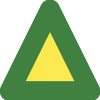
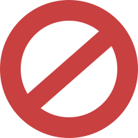

See also Measuring Solenoid Current.
The WSC-LP1 is protected by a PTC fuse which trips at 500mA to 1A total current flow from the power transformer. This includes current flow through valve solenoids.
The electronics in the WSC-LP1 consume less than 25mA A/C current, so if the PTC fuse trips it will usually be due to a wiring problem or faulty solenoid.
When the PTC fuse trips, power to the WSC-LP1 electronics and solenoids is cut off immediately. The triacs which switch A/C to the solenoids shut down. Whatever load the controller was powering is shed.
When the PTC fuse detects the current has dropped to safe levels, it automatically reconnects A/C to the WSC-LP1 power supply, and the system restarts. The controller performs the following safety checks:
Isolated zones are shown on the Actvities and Settings pages with the  icon. When a zone is isolated it is removed from its normal position in watering schedules, and forced to the "back of the line". This allows the other zones to complete their programs before the isolated zone runs.
If a zone is isolated, and a subsequent fault is detected, the zone is disabled. Disabled zones are shown in the Settings page with the  icon. Disabled zones are removed from manual and scheduled activities. You are responsible for putting the zone back into operation. You should examine and fix whatever problems are causing excessive current draws before returning the zone to service.
The WSC-LP1 cannot tell the difference bewteen a power outage and a PTC fuse shutdown. So if power goes out while a program is active the controller will isolate whatever zone was active. After a power loss, check the activity log to see if a zone may have been affected.
Similarly, while zones are active, avoid actions which reset the controller. These actions include resetting the WIFI configuration, changing the WIFI SSID and downloading new firmware. If you cannot postpone such actions, at least clear the work queue first.
It's all about the water police. Where I live we can be fined hard for running sprinklers at the wrong time. I can't think of a fool-proof way to restart a program and guarantee it won't violate local ordinances.
You're free to restart an interrupted program whenever you want.